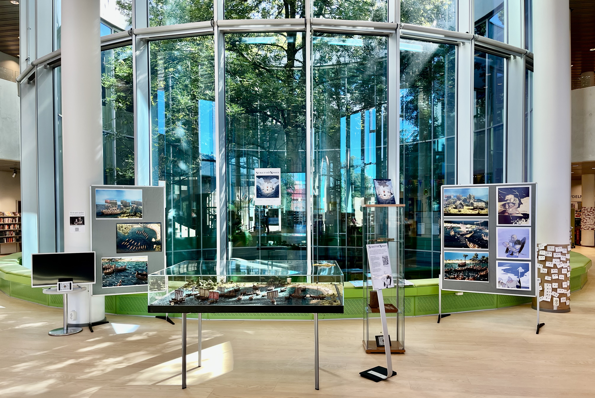

The game is currently being exhibited at the public library of Halmstad (Stadsbiblioteket i Halmstad).

The first opportunity for the public to play the game will be at the public library of Halmstad, September 19, 10:00 - 16:00. Sign up here!
If you know a good place for us to show the game, please get in touch!